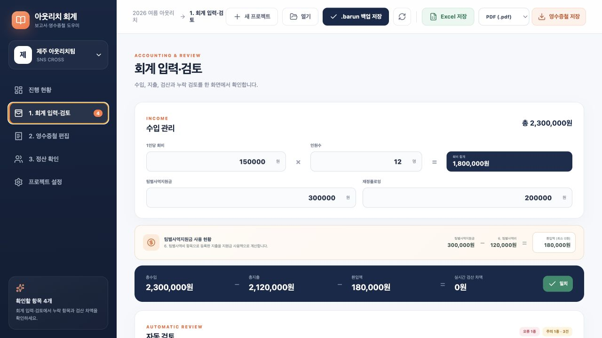
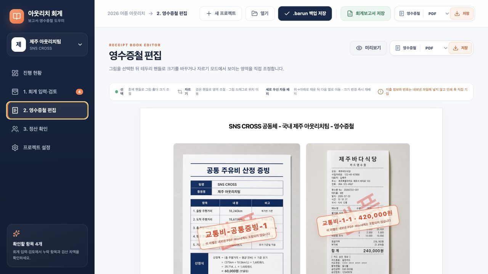

관리하기 쉬운 계좌
명의보다 회계가 입출금을 빠짐없이 확인할 수 있는지가 중요합니다.
교육자료의 핵심 원칙을 아웃리치 회계 화면 순서로 다시 정리했습니다. 출발 전 영수증 준비부터 Excel·영수증철 제출까지 하나씩 체크하세요.
오프라인 결제는 실물 영수증 원본을 잃어버리지 말고, 최종 보고서에서 총수입 = 총지출 + 환입액이 되게 맞춥니다.
앱 메뉴도 이 흐름을 따라갑니다. 막히면 현재 단계로 돌아오세요.
영수증은 나중에 다시 만들기 어렵습니다. 현장에 가기 전에 팀 전체가 같은 규칙을 알아야 합니다.
명의보다 회계가 입출금을 빠짐없이 확인할 수 있는지가 중요합니다.
가능하면 카드로 항목별 분리 결제하고 영수증을 바로 받습니다.
교통비·식비처럼 항목별 지퍼백을 준비하면 분실과 분류 실수가 줄어듭니다.
사전 MT 비용·간식, 애프터·뒤풀이·후속모임 식비, 개인에게 남은 회비를 나누어 돌려주는 일은 금지됩니다. 사전답사 교통비·식비와 출발/도착 중 휴게소 식사는 가능합니다.
한 프로젝트가 회계 입력과 모든 영수증 이미지를 함께 보관합니다.
공동체, 팀 이름, 사역지, 인원, 출발일과 도착일을 입력합니다.
웹앱은 입력 내용과 첨부 이미지를 이 브라우저 안에 자동으로 보관합니다.
주요 작업 뒤에는 위쪽 백업 버튼으로 프로젝트 파일을 내려받습니다.
프로젝트에는 입력 내용뿐 아니라 영수증·공통 주유비 증빙 이미지와 영수증철 편집값까지 포함됩니다. 다른 컴퓨터에서는 이 파일 하나를 옮겨 열면 됩니다.
회계 입력·검토 화면 맨 위에서 사용할 수 있는 전체 재정을 만듭니다.
금전출납부의 기본 원칙은 영수증 1개당 지출 1줄입니다.

이미 등록한 행을 누르면 같은 편집 화면이 열립니다.
첨부 이미지를 왼쪽에서 확대해 날짜·상호·금액을 확인합니다.
실물 원본인지, 파일로 출력할 온라인 자료인지 구분합니다.
금전출납부의 대표 설명입니다.
[식대간식비] 첫날 저녁 식사품목·수량·대상 등 검수에 필요한 정보입니다.
29명 · 김밥 29줄 · 생수 2박스‘개인이 먼저 결제’를 선택하고 이름을 바로 적으세요. 미리 정산 대상자를 만들 필요가 없으며 이름은 공식 Excel이나 영수증철에 출력되지 않습니다.
앱은 아래 8개 항목 순서로 묶고 같은 항목 안에서는 날짜순으로 정렬합니다.
| 항목 | 포함되는 지출 | 특히 확인할 점 |
|---|---|---|
| 1교통비 | 항공권, 렌터카, 통행료, 주유비, 주차비, 버스·지하철 | 자차 주유는 산정 증빙과 실물 주유 영수증이 모두 필요 |
| 2숙박비 | 현지 숙박, 시설·교회 숙박 | 영수증이 어렵다면 현금 영수증 양식에 상세 정보와 서명 |
| 3식대간식비 | 팀원 식사, 간식, 음료 | 먹은 인원을 반드시 입력하고 일회용품은 잡비로 분리 |
| 4사역비 | 전도물품, 마을잔치, 프로그램 재료, 사역 중 식사 | 사역과 직접 연결된 목적을 내용에 명확히 기재 |
| 5선물구입비 | 목회자·성도·전도대상자 선물 | 선물 대상과 목적, 상세 품목을 충분히 기재 |
| 6팀별사역비 | 팀별사역지원금으로 처리하는 사역 목적 지출 | 목회자 가정 선물 제외, 인정 가능한 증빙 필요 |
| 7헌금 | 공식 헌금 | 현금 영수증 양식에 영수내용·주소·연락처·성명·서명 |
| 8잡비 | 배송비, 상비약, 공간대여, 보험, 입장료, 수수료 | 여행자보험은 결제 증빙과 가입증명서를 함께 제출 |
카드매출전표 하나만으로 품목이 보이지 않으면 상세 거래자료가 더 필요합니다.
실물 카드영수증 또는 현금영수증 원본을 보관합니다. 앱에서는 ‘오프라인 실물’을 선택하고 필요한 부착칸 수를 만듭니다.
최종 출력 후 원본을 부착카드사 매출전표와 거래명세서 또는 주문상세정보를 함께 첨부합니다. 파일 선택이나 ‘클립보드’ 버튼 후 ⌘V/Ctrl+V로 넣을 수 있습니다.
날짜·상호·품목·총금액 확인네이버 지도 등 거리·유류비 산정 화면과 실물 주유 영수증이 모두 필요합니다. 공통 산정 증빙은 지출마다 붙이지 않고 여러 장을 한 번 등록합니다.
교통비 영수증철 맨 앞에 배치카드매출전표 또는 계좌이체증에 보험가입증명서를 더합니다. 보험증권은 한 페이지 전체가 보이게 준비합니다.
결제 증빙 + 가입증명서일반 영수증을 받기 어렵다면 제공된 현금 영수증 양식에 영수내용, 주소, 연락처, 성명과 서명을 자세히 적습니다.
출발 전에 양식을 출력세금계산서, 티켓과 카드전표, 카드매출전표와 견적서처럼 거래 내용을 확인할 수 있는 조합을 준비합니다.
영수증이 어려운 업체는 피하기원칙적으로 접거나 잘라 내용이 사라지면 안 됩니다. 너무 길어 A4에 들어가지 않을 때만 필요한 조각 수만큼 오프라인 부착칸을 추가하고, 내용을 빠뜨리지 않게 이어 붙이세요.
자동 검토는 같은 종류의 누락을 모아 보여주므로 경고 제목과 대상 영수증 번호를 함께 봅니다.
환입액 = 지원금 - 팀별사역비이며 최소 0원입니다. 남은 지원금은 교회로 환입합니다.
초과분은 자동으로 팀 회비 충당으로 계산됩니다. 팀별사역비 첫 행 비고의 자동 문구는 직접 수정할 수도 있습니다.
항목이 바뀌면 새 페이지에서 시작하고, 각 페이지 안에서는 최종 크기를 기준으로 가운데에 흐름 배치됩니다.

모서리·변 핸들로 크기를 조절하면 다음 그림이 자동으로 이어집니다.
자르기 모드에서 프레임 핸들과 그림 드래그로 보이는 영역을 맞춥니다.
PDF 또는 Word로 실제 저장될 페이지를 확인한 뒤 내보냅니다.
누가 먼저 냈는지는 편의를 위한 내부 정보이며 공식 금전출납부와 영수증철에는 나타나지 않습니다.
검토가 끝나기 전에도 Excel을 저장해 중간 상태를 확인할 수 있습니다. 출력·부착·형광펜·번호 쓰기는 최종 컨펌 후 진행하세요.
공식 템플릿 형식을 보존해 총괄표·회계보고서·금전출납부를 만듭니다.
편집한 페이지를 그대로 저장해 검수와 최종 출력에 사용합니다.
헤더는 텍스트, 영수증과 부착칸은 개별 그림 개체로 저장됩니다.
사진은 검수용입니다. 실물 원본을 끝까지 보관하세요.
자동 검산 차액을 반드시 0원으로 맞춥니다.
교통비 1번, 식비 1번처럼 항목이 바뀌면 다시 시작합니다.
최종 검수 후 출력물에서 직접 표시합니다.
카드매출전표와 거래명세서·주문상세정보를 함께 냅니다.
팀별사역비로 분류하고 목회자 가정 선물에는 쓰지 않습니다.
아웃리치 회비 사용 가능 범위를 지킵니다.
가이드는 언제든 다시 열 수 있고, 체크한 항목은 이 브라우저에만 저장됩니다.